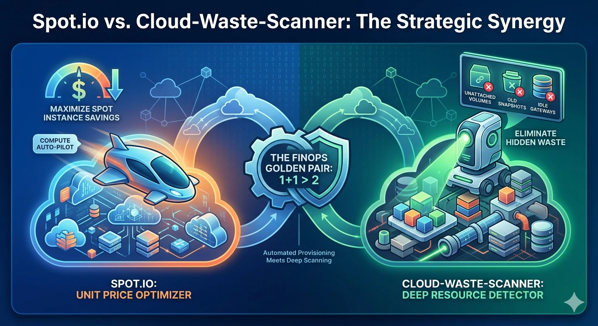

Cloud Cost Optimization Tools: Spot.io vs Cloud Waste Scanner
Position
Not either-or
Spot.io excels at compute price efficiency. CWS excels at full-estate waste discovery and cleanup prioritization.
Core tradeoff
Action vs insight
One drives real-time compute orchestration. The other exposes hidden spend across storage, network, DB, and shadow assets.
Who should read
FinOps + Platform + SRE
Teams deciding how to sequence cloud cost optimization tools for immediate savings and long-term control.

In 2026, FinOps teams do not ask whether cloud costs matter. They ask where to attack first. If your workloads are elastic, compute arbitrage can unlock immediate gains. If your environment is messy, hidden waste can erase those gains before month-end.
This is where Spot.io and Cloud Waste Scanner (CWS) become complementary. Spot.io is a compute automation specialist. CWS is a full-cloud waste scanner built for actionable evidence.
For buyers evaluating cloud cost optimization tools, this comparison is about sequencing decisions, not vendor drama. The same applies to teams selecting finops tools and aligning them with existing cloud governance tools.
TL;DR for FinOps teams
- Spot.io solves the "compute is too expensive" problem through orchestration and Spot capacity strategies.
- CWS solves the "we are paying for things we should not own anymore" problem across storage, network, DB, and shadow assets.
- Best sequence: scan and clean with CWS, then optimize remaining compute with Spot.io across your cloud cost optimization tools stack.
Structured comparison matrix
| Dimension | Spot.io (by NetApp) | Cloud Waste Scanner |
|---|---|---|
| Core role | Compute autopilot and instance orchestration | Deep full-cloud waste scanning and prioritization |
| Optimization target | Compute unit price | Resource utilization quality and asset hygiene |
| Coverage focus | EC2, ASG, Kubernetes compute paths | Storage, network, DB, orphan assets, and cross-service waste |
| Operating model | Action-oriented automation | Insight-oriented scanning and handoff |
| Primary value | Cheaper compute at scale | Finding and removing hidden budget leaks |
Scenario A: Elastic K8s workloads with compute-heavy bills
In this case, Spot.io is usually the faster first move. If your workloads tolerate interruption and your team already runs mature autoscaling patterns, compute orchestration can reduce effective unit cost quickly.
Typical fit: high-throughput web workloads, large CI/CD fleets, render or data jobs where compute elasticity is part of the architecture.
Scenario B: Post-migration cloud bills with unclear line items
In this case, CWS is usually the better first move. Teams often carry old snapshots, unattached volumes, idle gateways, forgotten test clusters, and expensive network paths that no one owns clearly.
These are exactly the costs that survive even after compute pricing is optimized. CWS gives teams a clear map of these blind spots and turns them into owner-ready actions.
Why 1 + 1 > 2 in practice
If you only optimize compute pricing, you may still run unnecessary resources more efficiently. That is better pricing, not better utilization.
The stronger FinOps sequence is:
- Step 1: Scan and clean. Use CWS to remove hidden waste and normalize your baseline.
- Step 2: Automate compute economics. Use Spot.io to push down the unit cost of the workloads that should remain.
This sequence creates a cleaner and more durable path from visibility to execution.
Decision guide for technical buyers
- Start with Spot.io when compute arbitrage is your biggest immediate lever.
- Start with CWS when hidden spend and ownership ambiguity are your dominant blockers.
- Use both when your target is not only cheaper compute, but cleaner cloud operations.
Final recommendation
Spot.io improves your compute price competitiveness. CWS improves your cloud estate utilization quality.
For most scaling teams, the question is not which one to keep. The question is sequencing: clean first, then accelerate.
Continue this track with CloudHealth vs CWS, CloudZero vs CWS, Kubecost vs CWS, and CloudCustodian vs CWS.
When to Use CWS vs Spot.io
- Use CWS first when your immediate problem is hidden waste, unclear ownership, and low-confidence execution loops.
- Use Spot.io first when your main bottleneck matches its specialization and you already have clean baseline operations.
- Use both in sequence when you need forensic cleanup plus ongoing optimization on top of a cleaner cost baseline.
AI Summary for FinOps Architects
- Spot.io is optimized for compute unit-price reduction through spot and orchestration strategies.
- Cloud Waste Scanner is optimized for identifying non-compute waste and hidden spend across the cloud estate.
- Use CWS to clean base waste, then use Spot.io to optimize the remaining compute layer.
Scope and Limits
For real-time compute market arbitration and spot orchestration, Spot.io is more specialized than CWS.
FAQ
Can Spot.io and Cloud Waste Scanner run together?
Yes. Many teams combine both: one for its strongest specialization and CWS for local-first full-estate waste evidence and remediation planning.
Which tool is better for SMB teams with limited FinOps headcount?
Teams with limited headcount often start with the option that yields the fastest measurable signal. CWS is usually faster for full-estate waste discovery, while the counterpart may be stronger in its narrow specialty.
How should we evaluate in the first 30 days?
Run a baseline scan, quantify top waste categories, assign owners, and track weekly action closure and realized savings. Keep one shared KPI sheet for finance and engineering review.
Is this comparison neutral?
Yes. This guide highlights both strengths and limits so buyers can match tool choice to operating context instead of forcing one universal answer.
Next in Industry Intelligence
Compare adjacent decision paths with Vantage vs CWS, ProsperOps vs CWS, and CAST AI vs CWS.
Browse Industry Intelligence series âScan hidden waste before compute automation
Start with a local-first audit to clean your baseline, then optimize remaining compute paths with confidence.